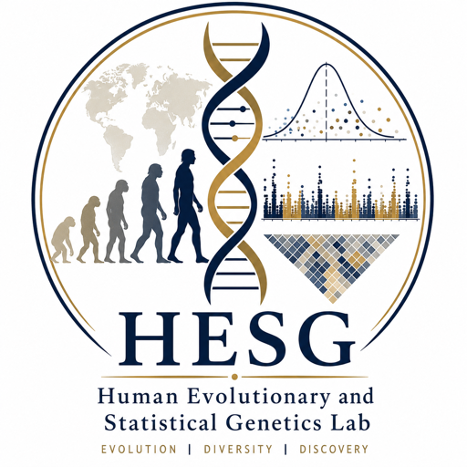

Admixed populations
How can we discover genetic risk factors in populations shaped by complex admixture and local ancestry?

Human Evolutionary and Statistical Genetics Lab Computational Methods for Population History and Complex DiseaseApproach
Many complex disease studies still treat population history as a nuisance variable. We instead ask how demographic history, admixture, and evolutionary processes can become part of the model for genetic discovery.
This area integrates population genetics and statistical genetics to discover disease-associated variants in historically complex populations, study the evolutionary history of disease-related traits, and build new models that connect ancestry, selection, and disease biology.
Questions
How can we discover genetic risk factors in populations shaped by complex admixture and local ancestry?
How have natural selection, demographic history, and environmental change shaped the genetic architecture of human traits and diseases?
How can new computational models jointly use population-genetic structure and statistical-genetic evidence for disease discovery?
Contact
Indiana University School of Medicine